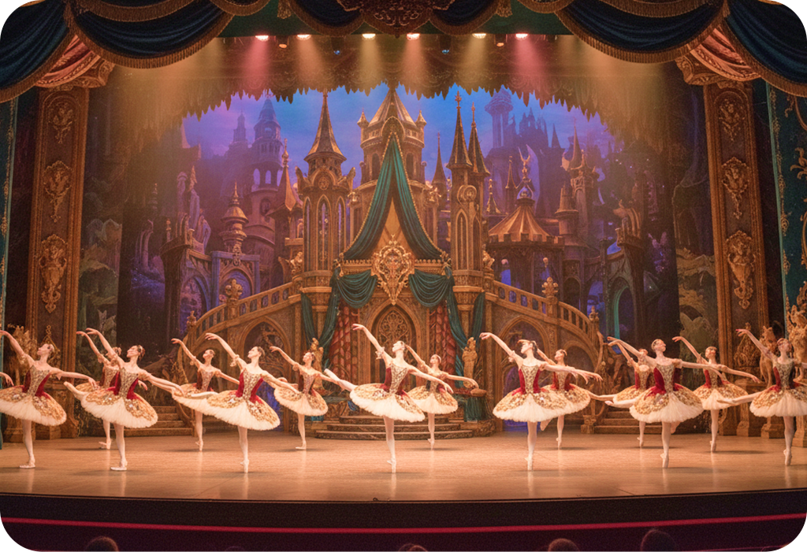
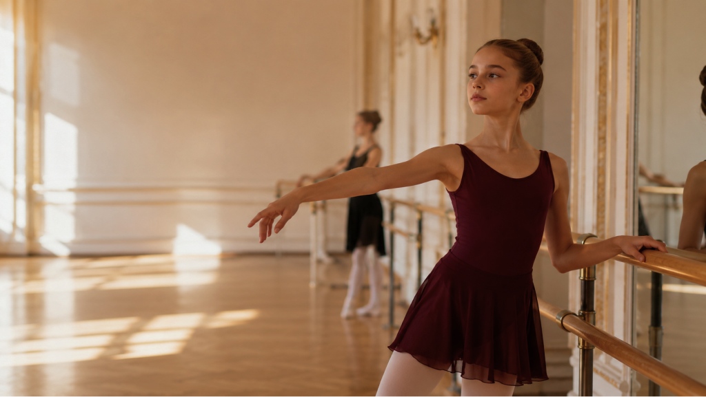
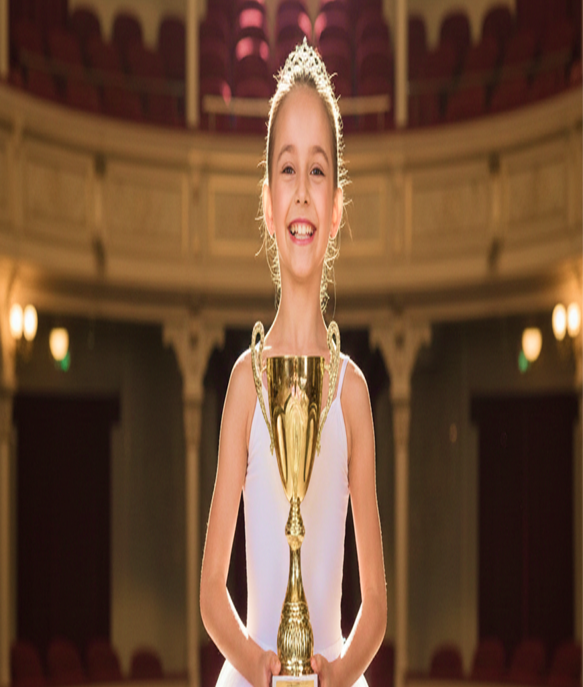
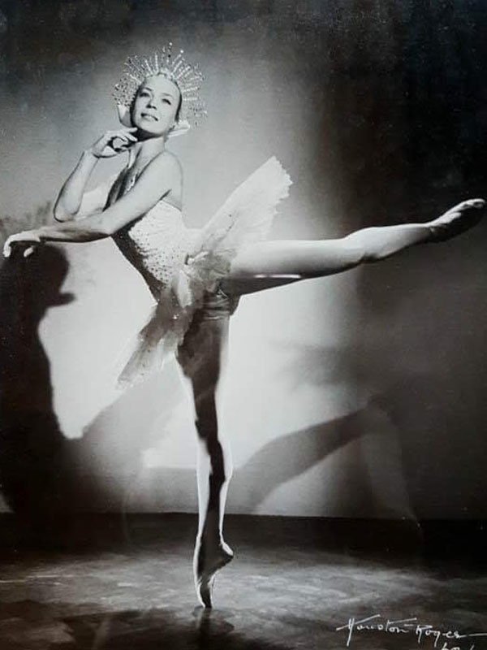
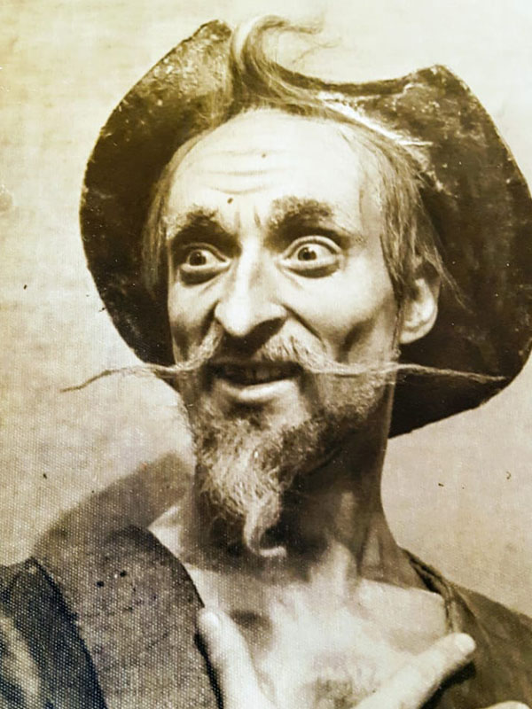
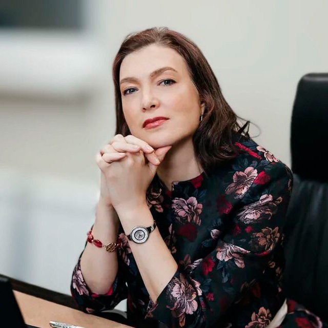

Для детей
Развиваем осанку, гибкость, координацию, внимание, дисциплину и любовь к движению.
Русская школа искусств Марии Володиной, основанная на традициях русской балетной школы и профессиональном подходе к хореографическому образованию.
Мы создаём пространство, в котором ученики развивают тело, осанку, музыкальность, дисциплину и уверенность в себе. Здесь можно заниматься для общего развития, готовиться к выступлениям или выстраивать профессиональный путь в хореографии.

Наша школа объединяет классический балет, современную хореографию, подготовку к поступлению и образовательные программы для разных возрастов.
Мы работаем с учениками с разным уровнем подготовки: от первых шагов в танце до серьёзной профессиональной подготовки.
Развиваем осанку, гибкость, координацию, внимание, дисциплину и любовь к движению.
Помогаем укрепить технику, раскрыть артистичность и подготовиться к дальнейшему обучению.
Создаём комфортную среду для занятий балетом, растяжкой, body ballet и современными практиками.
Помогаем подготовиться к поступлению и увереннее пройти творческие испытания.
ГРАНДБАЛЕТ — школа балета и современного танца в Москве, созданная Марией Эриковной Володиной вместе с единомышленниками.
В основе школы — бесценный опыт, полученный в наследство от великих педагогов русской балетной школы. Здесь хореография рассматривается не просто как занятие, а как путь развития: дисциплины, культуры движения, музыкальности, характера и сценического мышления.
Школа объединяет обучение для детей, подростков и взрослых, предпрофессиональную подготовку, профильное образование, интенсивы и сценическую практику.

Мария Эриковна Володина — потомственная балерина, представительница балетной династии Володиных-Самохваловых, известных артистов балета Большого театра.
Её профессиональный путь связан с балетной сценой, педагогикой, журналистикой, продюсированием и созданием образовательных проектов в сфере хореографического искусства.
Московское академическое хореографическое училище — артистка балета
Факультет журналистики МГУ им. М. В. Ломоносова — журналист
Институт русского театра — педагог-балетмейстер
ГИТИС, продюсерский факультет
Экс-солистка балета Государственного академического Большого театра России
Заслуженная артистка Российской Федерации
Директор Русской школы искусств ГРАНДБАЛЕТ с 2007 года
Создатель международных хореографических учебных заведений
Основатель образовательной системы ГРАНДБАЛЕТ
ГРАНДБАЛЕТ — частное хореографическое образовательное пространство, где ребёнок может получать дополнительное предпрофессиональное и профильное образование в сфере хореографического искусства.
Школа создаёт условия для системного развития учеников, которые хотят заниматься танцем серьёзно и видеть в нём не только увлечение, но и возможный профессиональный путь.

Сильная база, дисциплина и уважение к традициям балетной школы.

Свобода движения, выразительность, пластика и работа с телом.

Развитие артистичности, уверенности и умения выступать перед зрителем.
Дать возможность одарённым детям обучаться искусству танца.
Мы создаём среду, в которой ученик может раскрыть способности, развить тело, дисциплину, вкус, артистичность и уважение к классической хореографической школе.
Постановка корпуса, работа у станка, координация, музыкальность и грамотная техника.
Мы учитываем возраст, уровень подготовки и индивидуальные особенности ученика.
Занятия выстроены последовательно: от базовых движений к более сложным комбинациям.
Ученику важно чувствовать, что его видят, направляют и помогают двигаться вперёд.
Мария Володина принадлежит к семье известной балетной династии Володиных-Самохваловых.
История ГРАНДБАЛЕТ связана с традициями Большого театра, академической балетной школой и педагогическим наследием, которое передаётся новым поколениям учеников.
Заслуженная артистка РСФСР
Майя Николаевна Самохвалова в 1948 году окончила Московское хореографическое училище по классу известного педагога М. А. Кожуховой и была принята в балетную труппу Большого театра.
Она быстро заняла положение ведущей солистки и стала яркой, выдающейся балериной. Репетировала под руководством легендарной Марины Семёновой. Чистота танца Майи Самохваловой была такой кристальной, что артистка заслужила имя «Мастер каллиграфии».
После окончания балетной карьеры Майя Самохвалова работала педагогом-репетитором Большого театра.

Заслуженный артист РСФСР
Эрик Георгиевич Володин в 1943 году окончил Московское хореографическое училище, но ещё за два года до окончания был принят в балетную труппу Большого театра. Он учился у Петра Гусева и Асафа Мессерера.
В 1967 году окончил балетмейстерский факультет Государственного института театрального искусства по специальности «Педагог-балетмейстер», где учился у Николая Тарасова.
В разные годы Эрик Георгиевич был заведующим мимического ансамбля Большого театра, заведующим балетной труппой Большого театра, а также педагогом-репетитором Большого театра.

Школа располагает пространством, отвечающим требованиям для профессионального обучения: просторными балетными залами с высокими потолками, специализированным напольным амортизирующим покрытием, станками и зеркалами.
Помещения оснащены раздевалками с душевыми кабинами, соответствуют современным стандартам безопасности и имеют стильный дизайн.
Материальная и методическая база школы позволила получить лицензию на образовательную деятельность.
Конечная цель проекта — получение учениками профессионального хореографического образования. Расписание профильных дисциплин может согласовываться с обучением в общеобразовательной школе, чтобы дети имели возможность одновременно получать общее и профессиональное образование.
Ученики Русской школы искусств ГРАНДБАЛЕТ регулярно принимают участие в балетных профессиональных конкурсах и завоёвывают призовые места.
Мы гордимся нашими учениками и их достижениями.
Воспитывая молодое поколение в духе традиций культурного наследия, мы помогаем формировать уважение к искусству, дисциплину, ответственность и стремление к развитию.
Учредитель Русской школы искусств ГРАНДБАЛЕТ
Солистка балета Большого театра
Заслуженная артистка России

Глава попечительского совета Русской школы искусств ГРАНДБАЛЕТ
Одна из самых ярких фигур мирового балета
Народный артист России
Занятия по направлению «Название услуги» помогают развивать осанку, гибкость, координацию, силу, музыкальность и уверенность в движении. Программа подбирается с учётом возраста, уровня подготовки и цели ученика.
Обучение проходит в комфортном темпе под руководством педагогов ГРАНДБАЛЕТ. На занятиях ученики постепенно осваивают базовые элементы, укрепляют тело, развивают выразительность и учатся работать с музыкой.
Этот блок можно редактировать через админ-панель и использовать для SEO-текста на страницах услуг.

Поможем подобрать направление, школу и комфортную группу по возрасту и уровню подготовки